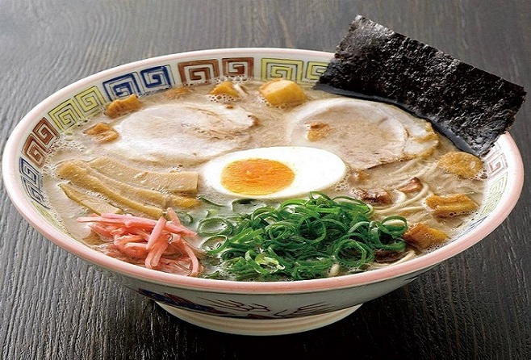
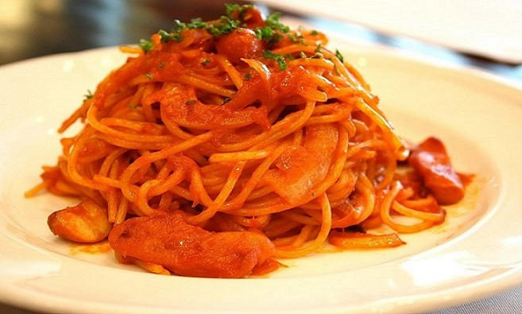
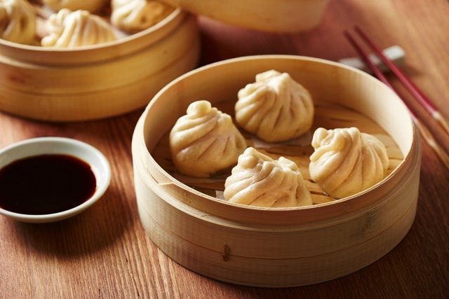

津田沼で美味しいランチはいかが？
千葉県の津田沼で美味しいランチ店をご紹介します。 らーめん屋、おしゃれな洋食店、中華料理店やカフェを、有名なお店から隠れている名店の幅広い視野で 男性、女性を問わないおすすめのお店をご紹介するので参考にしてみてください。 これを見れば、津田沼でのご飯屋は困りません！
あなたが今、津田沼で食べたいものは？？
１. らーめん

【 チーズらーめん🍜 、 魚介系らーめん🍜 、 ガッツリ系らーめん🍜 、 九州らーめん🍜】
２. 洋食

【 ハンバーグ🍴・オムライス🍚 、 ステーキ🍴 、 パスタ🍝・イタリアン料理🍕 】
３. その他

【 中華料理🍴 、 オシャレなカフェ☕ 、 ファミレス👪 、 サイゼリヤ🍖 etc... 】